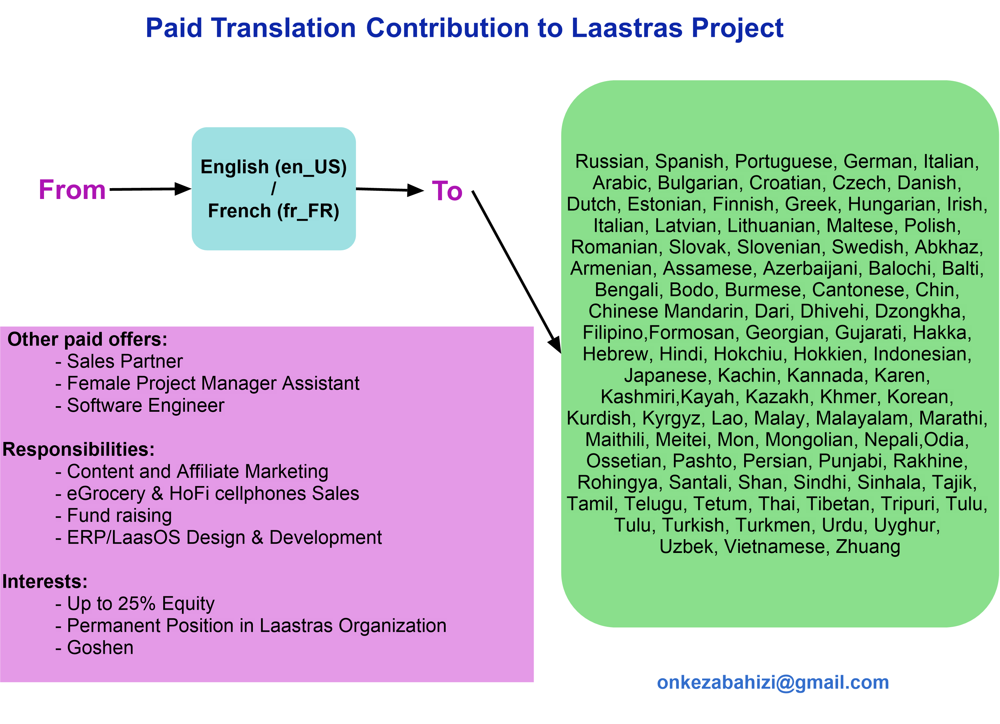
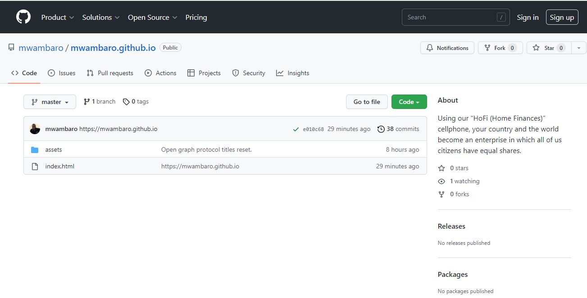
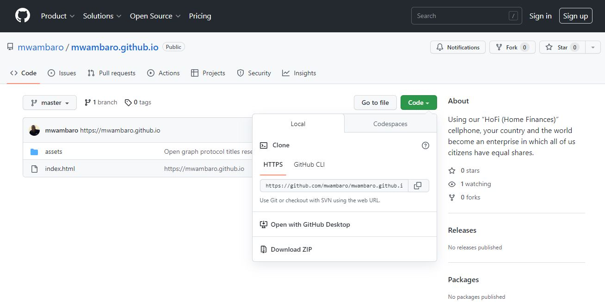
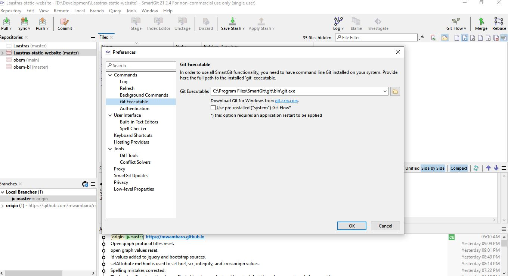
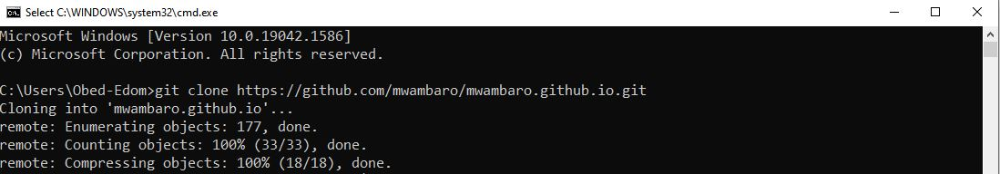
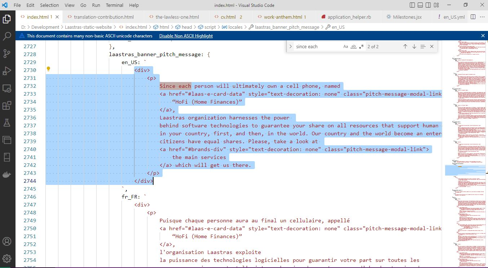
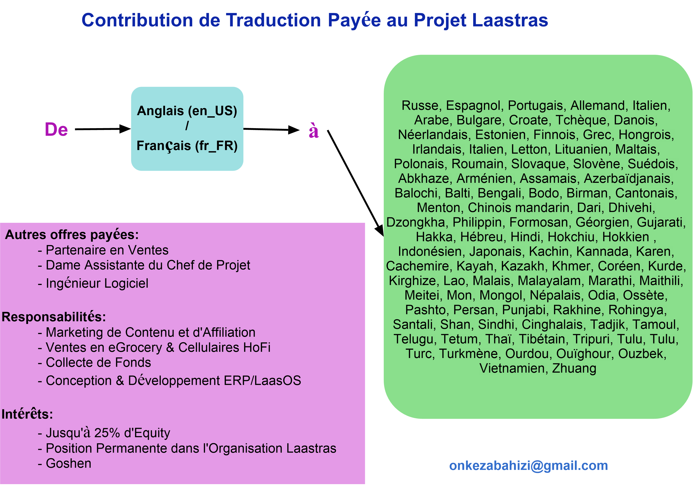

<!DOCTYPE html>
<html>
    <head>
        <meta charset="utf-8">
        <meta name="viewport" content="width=device-width, initial-scale=1">
        <link rel="shortcut icon" type="image/x-icon" href="favicon.svg" />
        <meta name="description" content="Since each person will ultimately own a cell phone, named “HoFi (Home Finances)”, Laastras organization harnesses the power behind software technologies to guarantee your share on all resources that support human existence in your country, first, and then, in the world. Our country and the world become an enterprise in which all of us citizens have equal shares. Our major brands are: “LaasEgrocery” (nutrition), “LaasEcard” (a cell phone named HoFi, i.e., Home Finances), “LaasElogistics”, and “LaasEalliances”">
    
        <!-- // 35 characters -->
        <meta property="og:title" content="Contribution Offer - Laastras" />
        <meta property="og:url" content="https://mwambaro.github.io/assets/translation-contribution.html" />
        <!-- // 65 characters -->
        <meta property="og:description" content="Nutrition.Equality.Financial Security.Capitalism Order" />
        <!-- // Image type PNG or JPG size less than 300KB and minimum pixels 300x200 -->
        <meta property="og:image" content="https://am3pap006files.storage.live.com/y4mP6tVlzh_Qn_cBhy3dRYarOLyQnz7547cHiA6DZPwKJ4KkNUkqktT0Z_iHkORIsnlJboap7-zmTDFbJmnWqUyZE7kVrIKkEu2SLe2aneuey-73cESoSBPrVSTZc-3zx05Rmlpr1GkZrO3N42JWovc5tv1BAa9Za7Ne1MCkIuut97TmH1iTO6nNdSuKdmLnuFf?width=3045&height=2205&cropmode=none" />
        <!-- // see https://opengraphprotocol.org/#types -->
        <meta property="og:type" content="website" />
        <!-- // Examples: en_US, en_GB. => locale_TERRITORRY -->
        <meta property="og:locale" content="en_US" />

        <title>Contribution to Laastras</title>

        <!-- Fonts -->
        <link href="https://fonts.googleapis.com/css2?family=Nunito:wght@400;600;700&display=swap" rel="stylesheet">

        <link rel="stylesheet" href="https://cdn.jsdelivr.net/npm/bootstrap@5.0.2/dist/css/bootstrap.min.css" integrity="sha384-EVSTQN3/azprG1Anm3QDgpJLIm9Nao0Yz1ztcQTwFspd3yD65VohhpuuCOmLASjC" crossorigin="anonymous" id="bootstrap_css">

        <!-- Styles -->
        <style>
            /*! normalize.css v8.0.1 | MIT License | github.com/necolas/normalize.css */html{line-height:1.15;-webkit-text-size-adjust:100%}body{margin:0}a{background-color:transparent}[hidden]{display:none}html{font-family:system-ui,-apple-system,BlinkMacSystemFont,Segoe UI,Roboto,Helvetica Neue,Arial,Noto Sans,sans-serif,Apple Color Emoji,Segoe UI Emoji,Segoe UI Symbol,Noto Color Emoji;line-height:1.5}*,:after,:before{box-sizing:border-box;border:0 solid #e2e8f0}a{color:inherit;text-decoration:inherit}svg,video{display:block;vertical-align:middle}video{max-width:100%;height:auto}.bg-white{--bg-opacity:1;background-color:#fff;background-color:rgba(255,255,255,var(--bg-opacity))}.bg-gray-100{--bg-opacity:1;background-color:#f7fafc;background-color:rgba(247,250,252,var(--bg-opacity))}.border-gray-200{--border-opacity:1;border-color:#edf2f7;border-color:rgba(237,242,247,var(--border-opacity))}.border-t{border-top-width:1px}.flex{display:flex}.grid{display:grid}.hidden{display:none}.items-center{align-items:center}.justify-center{justify-content:center}.font-semibold{font-weight:600}.h-5{height:1.25rem}.h-8{height:2rem}.h-16{height:4rem}.text-sm{font-size:.875rem}.text-lg{font-size:1.125rem}.leading-7{line-height:1.75rem}.mx-auto{margin-left:auto;margin-right:auto}.ml-1{margin-left:.25rem}.mt-2{margin-top:.5rem}.mr-2{margin-right:.5rem}.ml-2{margin-left:.5rem}.mt-4{margin-top:1rem}.ml-4{margin-left:1rem}.mt-8{margin-top:2rem}.ml-12{margin-left:3rem}.-mt-px{margin-top:-1px}.max-w-6xl{max-width:72rem}.min-h-screen{min-height:100vh}.overflow-hidden{overflow:hidden}.p-6{padding:1.5rem}.py-4{padding-top:1rem;padding-bottom:1rem}.px-6{padding-left:1.5rem;padding-right:1.5rem}.pt-8{padding-top:2rem}.fixed{position:fixed}.relative{position:relative}.top-0{top:0}.right-0{right:0}.shadow{box-shadow:0 1px 3px 0 rgba(0,0,0,.1),0 1px 2px 0 rgba(0,0,0,.06)}.text-center{text-align:center}.text-gray-200{--text-opacity:1;color:#edf2f7;color:rgba(237,242,247,var(--text-opacity))}.text-gray-300{--text-opacity:1;color:#e2e8f0;color:rgba(226,232,240,var(--text-opacity))}.text-gray-400{--text-opacity:1;color:#cbd5e0;color:rgba(203,213,224,var(--text-opacity))}.text-gray-500{--text-opacity:1;color:#a0aec0;color:rgba(160,174,192,var(--text-opacity))}.text-gray-600{--text-opacity:1;color:#718096;color:rgba(113,128,150,var(--text-opacity))}.text-gray-700{--text-opacity:1;color:#4a5568;color:rgba(74,85,104,var(--text-opacity))}.text-gray-900{--text-opacity:1;color:#1a202c;color:rgba(26,32,44,var(--text-opacity))}.underline{text-decoration:underline}.antialiased{-webkit-font-smoothing:antialiased;-moz-osx-font-smoothing:grayscale}.w-5{width:1.25rem}.w-8{width:2rem}.w-auto{width:auto}.grid-cols-1{grid-template-columns:repeat(1,minmax(0,1fr))}@media (min-width:640px){.sm\:rounded-lg{border-radius:.5rem}.sm\:block{display:block}.sm\:items-center{align-items:center}.sm\:justify-start{justify-content:flex-start}.sm\:justify-between{justify-content:space-between}.sm\:h-20{height:5rem}.sm\:ml-0{margin-left:0}.sm\:px-6{padding-left:1.5rem;padding-right:1.5rem}.sm\:pt-0{padding-top:0}.sm\:text-left{text-align:left}.sm\:text-right{text-align:right}}@media (min-width:768px){.md\:border-t-0{border-top-width:0}.md\:border-l{border-left-width:1px}.md\:grid-cols-2{grid-template-columns:repeat(2,minmax(0,1fr))}}@media (min-width:1024px){.lg\:px-8{padding-left:2rem;padding-right:2rem}}@media (prefers-color-scheme:dark){.dark\:bg-gray-800{--bg-opacity:1;background-color:#2d3748;background-color:rgba(45,55,72,var(--bg-opacity))}.dark\:bg-gray-900{--bg-opacity:1;background-color:#1a202c;background-color:rgba(26,32,44,var(--bg-opacity))}.dark\:border-gray-700{--border-opacity:1;border-color:#4a5568;border-color:rgba(74,85,104,var(--border-opacity))}.dark\:text-white{--text-opacity:1;color:#fff;color:rgba(255,255,255,var(--text-opacity))}.dark\:text-gray-400{--text-opacity:1;color:#cbd5e0;color:rgba(203,213,224,var(--text-opacity))}.dark\:text-gray-500{--tw-text-opacity:1;color:#6b7280;color:rgba(107,114,128,var(--tw-text-opacity))}}
        </style>

        <style>
            body {
                font-family: 'Nunito', 'Segoe UI', sans-serif;
            }
            a {
                color: blue
            }
        </style>
        
        <!-- https://www.w3schools.com/tags/att_script_integrity.asp -->
        <script src="https://code.jquery.com/jquery-3.6.3.min.js" integrity="sha384-Ft/vb48LwsAEtgltj7o+6vtS2esTU9PCpDqcXs4OCVQFZu5BqprHtUCZ4kjK+bpE" crossorigin="anonymous" id="jquery"></script>
        <script src="https://cdn.jsdelivr.net/npm/bootstrap@5.0.2/dist/js/bootstrap.bundle.min.js" integrity="sha384-MrcW6ZMFYlzcLA8Nl+NtUVF0sA7MsXsP1UyJoMp4YLEuNSfAP+JcXn/tWtIaxVXM" crossorigin="anonymous" id="bootstrap_js"></script>
        <script>
            function get_env()
            {
                let env = 'production';

                if(/^file:$/i.test(window.location.protocol))
                {
                    env = 'development';
                }

                return env;

            } // get_env

            function set_urls()
            {
                var env = get_env();
                var urls = {
                    bootstrap_css: {
                        development: 'bootstrap.min.css',
                        production: 'https://cdn.jsdelivr.net/npm/bootstrap@5.0.2/dist/css/bootstrap.min.css',
                        integrity: 'sha384-EVSTQN3/azprG1Anm3QDgpJLIm9Nao0Yz1ztcQTwFspd3yD65VohhpuuCOmLASjC'
                    },
                    bootstrap_js: {
                        development: 'bootstrap.bundle.min.js',
                        production: 'https://cdn.jsdelivr.net/npm/bootstrap@5.0.2/dist/js/bootstrap.bundle.min.js',
                        integrity: 'sha384-MrcW6ZMFYlzcLA8Nl+NtUVF0sA7MsXsP1UyJoMp4YLEuNSfAP+JcXn/tWtIaxVXM'
                    },
                    jquery: {
                        development: 'jquery-3.6.3.min.js',
                        production: 'https://code.jquery.com/jquery-3.6.3.min.js',
                        integrity: 'sha384-Ft/vb48LwsAEtgltj7o+6vtS2esTU9PCpDqcXs4OCVQFZu5BqprHtUCZ4kjK+bpE'
                    }
                }

                if(env === 'production') // set integrity and crossorigin attributes
                {
                    /*
                    document.getElementById('bootstrap_css').setAttribute('integrity', urls.bootstrap_css.integrity);
                    document.getElementById('bootstrap_js').setAttribute('integrity', urls.bootstrap_js.integrity);
                    document.getElementById('jquery').setAttribute('integrity', urls.jquery.integrity);

                    document.getElementById('bootstrap_css').setAttribute('crossorigin', 'anonymous');
                    document.getElementById('bootstrap_js').setAttribute('crossorigin', 'anonymous');
                    document.getElementById('jquery').setAttribute('crossorigin', 'anonymous');
                    */
                }
                else if(env === 'development') // remove integrity and crossorigin attributes
                {
                    document.getElementById('bootstrap_css').removeAttribute('integrity');
                    document.getElementById('bootstrap_js').removeAttribute('integrity');
                    document.getElementById('jquery').removeAttribute('integrity');

                    document.getElementById('bootstrap_css').removeAttribute('crossorigin');
                    document.getElementById('bootstrap_js').removeAttribute('crossorigin');
                    document.getElementById('jquery').removeAttribute('crossorigin');
                }
                else 
                {
                    console.log('Unsupported environment: ' + env);
                    return env;
                }

                document.getElementById('bootstrap_css').setAttribute('href', urls.bootstrap_css[env]);
                document.getElementById('bootstrap_js').setAttribute('src', urls.bootstrap_js[env]);
                document.getElementById('jquery').setAttribute('src', urls.jquery[env]);

                console.log('ENV: ' + env);

                return env;

            } // set_urls
        </script>
        <script>
            function is_mobile()
            {
                let isMob = false; //initiate as false
                try
                {
                    // device detection
                    if(/(android|bb\d+|meego).+mobile|avantgo|bada\/|blackberry|blazer|compal|elaine|fennec|hiptop|iemobile|ip(hone|od)|ipad|iris|kindle|Android|Silk|lge |maemo|midp|mmp|netfront|opera m(ob|in)i|palm( os)?|phone|p(ixi|re)\/|plucker|pocket|psp|series(4|6)0|symbian|treo|up\.(browser|link)|vodafone|wap|windows (ce|phone)|xda|xiino/i.test(navigator.userAgent) 
                    || /1207|6310|6590|3gso|4thp|50[1-6]i|770s|802s|a wa|abac|ac(er|oo|s\-)|ai(ko|rn)|al(av|ca|co)|amoi|an(ex|ny|yw)|aptu|ar(ch|go)|as(te|us)|attw|au(di|\-m|r |s )|avan|be(ck|ll|nq)|bi(lb|rd)|bl(ac|az)|br(e|v)w|bumb|bw\-(n|u)|c55\/|capi|ccwa|cdm\-|cell|chtm|cldc|cmd\-|co(mp|nd)|craw|da(it|ll|ng)|dbte|dc\-s|devi|dica|dmob|do(c|p)o|ds(12|\-d)|el(49|ai)|em(l2|ul)|er(ic|k0)|esl8|ez([4-7]0|os|wa|ze)|fetc|fly(\-|_)|g1 u|g560|gene|gf\-5|g\-mo|go(\.w|od)|gr(ad|un)|haie|hcit|hd\-(m|p|t)|hei\-|hi(pt|ta)|hp( i|ip)|hs\-c|ht(c(\-| |_|a|g|p|s|t)|tp)|hu(aw|tc)|i\-(20|go|ma)|i230|iac( |\-|\/)|ibro|idea|ig01|ikom|im1k|inno|ipaq|iris|ja(t|v)a|jbro|jemu|jigs|kddi|keji|kgt( |\/)|klon|kpt |kwc\-|kyo(c|k)|le(no|xi)|lg( g|\/(k|l|u)|50|54|\-[a-w])|libw|lynx|m1\-w|m3ga|m50\/|ma(te|ui|xo)|mc(01|21|ca)|m\-cr|me(rc|ri)|mi(o8|oa|ts)|mmef|mo(01|02|bi|de|do|t(\-| |o|v)|zz)|mt(50|p1|v )|mwbp|mywa|n10[0-2]|n20[2-3]|n30(0|2)|n50(0|2|5)|n7(0(0|1)|10)|ne((c|m)\-|on|tf|wf|wg|wt)|nok(6|i)|nzph|o2im|op(ti|wv)|oran|owg1|p800|pan(a|d|t)|pdxg|pg(13|\-([1-8]|c))|phil|pire|pl(ay|uc)|pn\-2|po(ck|rt|se)|prox|psio|pt\-g|qa\-a|qc(07|12|21|32|60|\-[2-7]|i\-)|qtek|r380|r600|raks|rim9|ro(ve|zo)|s55\/|sa(ge|ma|mm|ms|ny|va)|sc(01|h\-|oo|p\-)|sdk\/|se(c(\-|0|1)|47|mc|nd|ri)|sgh\-|shar|sie(\-|m)|sk\-0|sl(45|id)|sm(al|ar|b3|it|t5)|so(ft|ny)|sp(01|h\-|v\-|v )|sy(01|mb)|t2(18|50)|t6(00|10|18)|ta(gt|lk)|tcl\-|tdg\-|tel(i|m)|tim\-|t\-mo|to(pl|sh)|ts(70|m\-|m3|m5)|tx\-9|up(\.b|g1|si)|utst|v400|v750|veri|vi(rg|te)|vk(40|5[0-3]|\-v)|vm40|voda|vulc|vx(52|53|60|61|70|80|81|83|85|98)|w3c(\-| )|webc|whit|wi(g |nc|nw)|wmlb|wonu|x700|yas\-|your|zeto|zte\-/i.test(navigator.userAgent.substr(0,4))) 
                    { 
                        isMob = true;
                    }
                }
                catch(error)
                {
                    console.log("isMobile: " + error);
                }

                return isMob;
            } // is_mobile

            function get_locale()
            {
                let loc = null;
                if(window.location.href)
                {
                    let match = /locale=([^&#]+)/.exec(window.location.href);
                    if(match)
                    {
                        loc = match[1];
                        console.log('Locale: ' + loc);
                    }
                }
                if(loc === null)
                {
                    loc = 'en_US';
                }

                return loc;

            } // get_locale

            if(true)
            {
                var locale = get_locale();
                var is_mob = is_mobile();
                console.log('Main locale: ' + locale + '; Mobile: ' + (is_mob ? 'true' : 'false'));
                var grid_width = is_mob ? 'col-sm-12' : 'col-md-10';
                
                var locales = {
                    title: {
                        en_US: `Contribution to Laastras`,
                        fr_FR: `Contribuer au Projet Laastras`
                    },
                    og_title: {
                        en_US: 'Contribution Offer - Laastras',
                        fr_FR: 'Offre de Contribution - Laastras'
                    },
                    og_image: {
                        en_US: 'https://am3pap006files.storage.live.com/y4mP6tVlzh_Qn_cBhy3dRYarOLyQnz7547cHiA6DZPwKJ4KkNUkqktT0Z_iHkORIsnlJboap7-zmTDFbJmnWqUyZE7kVrIKkEu2SLe2aneuey-73cESoSBPrVSTZc-3zx05Rmlpr1GkZrO3N42JWovc5tv1BAa9Za7Ne1MCkIuut97TmH1iTO6nNdSuKdmLnuFf?width=3045&height=2205&cropmode=none',
                        fr_FR: 'https://am3pap006files.storage.live.com/y4mZGz5bE8SjA1gThGeHX1V8GLwPlsyI8wb0XU4mjCR7xVRagXNGkVl4AVKungIoJDd9Vo7ZailaJp3_m5opT_UfRWVq_ZLjoFU5e5DO4D9Th3fgSd-dfslUGportPGZ2_-oCKZGmt3TRYSnBYtb7hrQOCy-jGp_nss03CILrv39GPQUV0mtsqFdB4uIlcvtxk1?width=3086&height=2205&cropmode=none'
                    },
                    og_description: {
                        en_US: 'Nutrition.Equality.Financial Security.Capitalism Order',
                        fr_FR: 'Nutrition.Egalité.Sécurité Financière.Ordre dans le Capitalisme'
                    },
                    og_url: {
                        en_US: 'https://mwambaro.github.io/assets/translation-contribution.html?locale=en_US',
                        fr_FR: 'https://mwambaro.github.io/assets/translation-contribution.html?locale=fr_FR'
                    },
                    og_locale: {
                        en_US: 'en_US',
                        fr_FR: 'fr_FR'
                    },
                    site_description: {
                        en_US: 'Since each person will ultimately own a cell phone, named “HoFi (Home Finances)”, Laastras organization harnesses the power behind software technologies to guarantee your share on all resources that support human existence in your country, first, and then, in the world. Our country and the world become an enterprise in which all of us citizens have equal shares. Our major brands are: “LaasEgrocery” (nutrition), “LaasEcard” (a cell phone named HoFi, i.e., Home Finances), “LaasElogistics”, and “LaasEalliances”',
                        fr_FR: "Puisque chaque personne aura au final un cellulaire, appellé “HoFi (Home Finances)”, l'organisation Laastras exploite la puissance des technologies logicielles pour guarantir votre part sur toutes les ressources qui supportent l'existence humaine dans votre pays, d'abord, et puis, dans le monde. Notre pays et le monde deviennent une entreprise dans laquelle nous tous citoyens avons des parts (actions) égales. Nos marques principales sont: “LaasEgrocery” (nutrition), “LaasEcard” (cellulaire appellé HoFi, pour “Home Finances”), “LaasElogistics”, et “LaasEalliances”"
                    },
                    back_to_top: {
                        en_US: 'OLN',
                        fr_FR: 'SMR'
                    },
                    back_to_head: {
                        en_US: 'Back to top',
                        fr_FR: 'Retour en haut'
                    },
                    contribution_to_laastras: {
                        en_US: `
                            <div style="margin: 10px">
                                <h3> Contribution to Laastras Project </h3>
                                <div style="padding-top: 10px; padding-bottom: 10px">
                                    <a href="../index.html?locale=en_US#mission-div" style="text-decoration: none">
                                        Laastras project
                                    </a>
                                    must be rolled with regard to the tight 
                                    <a href="../index.html?locale=en_US#calendar-and-milestone" style="text-decoration: none">
                                        January 26, 2027 deadlines
                                    </a>.
                                    Plus, Laastras must meet the National Sovereignty constraint. So, we must involve as many 
                                    hands as possible. We are going to speciy different ways you can contribute to 
                                    <a href="../index.html?locale=en_US#mission-div" style="text-decoration: none">
                                        Laastras project
                                    </a>
                                    right now. Beside translation contribution, there are
                                    <a href="../index.html?locale=en_US#sales-div" style="text-decoration: none">
                                        other paid offers
                                    </a>:
                                    <strong>Sales Partner</strong>, <strong>female Project Manager Assistant</strong>, and 
                                    <strong>Software Engineer</strong>.
                                </div>
                                <div class="text-center">
                                    
                                </div>
                                <h5> Translation of Text into your Locale (for Experienced Readers)</h5>
                                <div style="padding-top: 10px; padding-bottom: 10px">
                                    <div>
                                        If you are a professional software engineer or if you have some experience with 
                                        <strong>Git</strong>, you can contribute to 
                                        <a href="../index.html?locale=en_US#mission-div" style="text-decoration: none">
                                            Laastras project
                                        </a> 
                                        by translating the text into the official locale used in 
                                        your country. Currently, the text is translated into English (en_US) and French (fr_FR).
                                        You can add your locale by translating from either of them. So, using your favorite HTML editor,
                                        find all the HTML files in the repository file system and target the locale code that represents 
                                        the language from which you will be translating. E.g. 
                                        <strong style="color: grey">en_US</strong> for English, and 
                                        <strong style="color: grey">fr_FR</strong> for French.
                                        The text to translate, in all HTML files, is located within a global variable named
                                        <strong style="color: grey">locales</strong>. 
                                        You can track it down using your source editor by looking for the 
                                        <strong style="color: grey">var locales</strong> string. 
                                        Read 
                                        <a href="https://opensource.com/article/19/7/create-pull-request-github" style="text-decoration: none">
                                            this tutorial 
                                        </a>
                                        for more information on how to contribute through GitHub pull request. y 
                                        <a href="https://github.com/mwambaro" style="text-decoration: none">
                                            GitHub profile
                                        </a>.
                                    </div>
                                    <div style="background-color: black; color: white; padding: 10px; margin: 10px; font-family: monospace;">
                                        <div> cmd> git clone https://github.com/mwambaro/mwambaro.github.io.git </div>
                                        <div> cmd> cd mwambaro.github.io</div>
                                    </div>
                                </div>
                                <h5> Setting Things Up Before Translation (for Novices)</h5>
                                <div style="padding-top: 10px; padding-bottom: 10px">
                                    <p>
                                        We assume you are running a Microsoft Windows operating system. Mine is Windows 10.
                                        Install <strong>Git</strong> on your computer (laptop/PC). The best way is installing 
                                        <strong>SmartGit</strong> software found
                                        <a href="https://www.syntevo.com/smartgit/" style="text-decoration: none">
                                            here 
                                        </a>.
                                        During installation, make sure you install it for non-commercial use only.
                                        Let us assume you have installed SmartGit successfully.
                                    </p>
                                    <div>
                                        <p>
                                            Visit my 
                                            <a href="https://github.com/mwambaro" style="text-decoration: none">
                                                GitHub profile
                                            </a>.
                                            Click on the "Repositories" pane below the main Github navigation bar,
                                            then find the repository named "mwambaro.github.io" and click on it so as to clone it.
                                        </p>
                                        <div class="text-center">
                                            
                                        </div>
                                        <div class="text-center">
                                            
                                        </div>
                                    </div>
                                    <p>
                                        Grab repository clone link by clicking <strong style="color: grey">copy</strong>. The link is: 
                                        <a href="#" style="text-decoration: none">
                                            https://github.com/mwambaro/mwambaro.github.io.git
                                        </a>
                                    </p>
                                    <div>
                                        <p>
                                            Well, get the path to the git executable. On my system it is: 
                                            <strong style="color: grey">C:\\Program Files\\SmartGit\\git\\bin\\git.exe</strong>.
                                            To find it, open SmartGit, click on <strong style="color: grey">Edit</strong> dropdown 
                                            menu then <strong style="color: grey">Preferences</strong>. 
                                            Under <strong style="color: grey">Commands</strong> collapsible, find 
                                            <strong style="color: grey">Git Executable</strong> and click it. Copy the displayed 
                                            git executable path. You will use it in the git clone command shortly. Again, 
                                            match yours or verify it is similar to mine.
                                        </p>
                                        <div class="text-center">
                                            
                                        </div>
                                    </div>
                                    <p>
                                        Open your terminal (mine is Windows CMD). To open your terminal, hit 
                                        <strong style="color: grey">Windows + R</strong> key combination and type 
                                        <strong style="color: grey">cmd</strong>, then press 
                                        <strong style="color: grey">Enter</strong> key on your keyboard. You should see 
                                        the black terminal window on your Windows system. Run the following commands, 
                                        one line at a time, making sure you wait until you are prompted for the next command.
                                        The commands to run, one at a time:
                                    </p>
                                    <div style="background-color: black; color: white; padding: 10px; margin: 10px; font-family: monospace;">
                                        <div> cmd> "C:\\Program Files\\SmartGit\\git\\bin\\git.exe" clone https://github.com/mwambaro/mwambaro.github.io.git </div>
                                        <div> cmd> cd mwambaro.github.io</div>
                                    </div>
                                    <div class="text-center">
                                        
                                    </div>
                                    <p>
                                        To view the full path to your repository and its contents, while in your open terminal, 
                                        type the following commands like you just did:
                                    </p>
                                    <div style="background-color: black; color: white; padding: 10px; margin: 10px; font-family: monospace;">
                                        <div> cmd> dir </div>
                                        <div> cmd> cd </div>
                                    </div>
                                    <p>
                                        These images reflect what things look like on my system. They should look differently 
                                        on yours, so, they are for reference purposes only. 
                                    </p>
                                    <div class="text-center">
                                        
                                    </div>
                                </div> 
                                <h5> Starting Translation (for Novices)</h5>
                                <div style="padding-top: 10px; padding-bottom: 10px">
                                    <p>
                                        To see locale codes such as <strong style="color: grey">en_US</strong>, 
                                        <strong style="color: grey">fr_FR</strong>, etc, visit 
                                        <a href="https://learn.microsoft.com/en-us/openspecs/office_standards/ms-oe376/6c085406-a698-4e12-9d4d-c3b0ee3dbc4a" style="text-decoration: none">
                                            this web page
                                        </a>.
                                        Replace the dash in the locale codes with an underscore. If you cannot find the code, please 
                                        search for it in your favorite search engine.
                                    </p>
                                    <p>
                                        Start translation. Find <strong style="color: grey">var locales</strong> in all html files. 
                                        To open the html file, install <strong style="color: grey">VS Code</strong> text editor and run 
                                        <strong style="color: grey">open with</strong> in the contextual menu. You can download the editor 
                                        from 
                                        <a href="https://code.visualstudio.com/" style="text-decoration: none">
                                            here
                                        </a>.
                                        The text to translate comes after <strong style="color: grey">en_US</strong> or 
                                        <strong style="color: grey">fr_FR</strong> locale symbol. Copy the text to the translation file 
                                        (named after your locale, e.g., <strong style="color: grey">de_DE.[html, txt, docx, doc]</strong>). 
                                        You are more comfortable using a <strong style="color: grey">.html</strong> translation file since 
                                        we use HTML tags a lot in the text. Structure it as follows:
                                    </p>
                                    <div style="background-color: #e2e8f0; padding: 10px" id="tr-struct">
                                        <div style="padding-top: 20px"><span class="tr-struct"> ------------------- 1 ----------------</span> </div>
                                        <div><span class="tr-struct"> <strong>Origin language:</strong> English (en_US) or French (fr_FR)</span> </div>
                                        <div><span class="tr-struct"> <strong>Destination language:</strong> German (de_DE)</span> </div>
                                        <div><span class="tr-struct"> <strong>Variable Path:</strong> path to the text to translate, in the source file </span> </div>
                                        <div style="padding-top: 20px"><span class="tr-struct"> Translated text</span> </div>

                                        <div style="padding-top: 20px"><span class="tr-struct"> ------------------- 2 ----------------</span> </div>
                                        <div><span class="tr-struct"> <strong>Origin language:</strong> English (en_US) or French (fr_FR)</span> </div>
                                        <div><span class="tr-struct"> <strong>Destination language:</strong> German (de_DE)</span> </div>
                                        <div><span class="tr-struct"> <strong>Variable Path:</strong> path to the text to translate, in the source file </span> </div>
                                        <div style="padding-top: 20px"><span class="tr-struct"> Translated text</span> </div>

                                        <div style="padding-top: 20px"><span class="tr-struct"> ------------------- 3 ----------------</span> </div>
                                        <div><span class="tr-struct"> etc.</span> </div>
                                    </div>
                                    <div class="text-center">
                                        
                                    </div>
                                    <p>
                                        <strong>NOTE:</strong> Do not translate HTML tags 
                                        (e.g. <strong style="color: grey">&ltdiv&gt, &lt/div&gt, &lta&gt, &lt/a&gt</strong>) or 
                                        anything within an HTML tag 
                                        (e.g. <strong style="color: grey">&lta href="#brands-div" style="text-decoration: none" class="pitch-message-modal-link"&gt</strong>).
                                        In the translated text, replace the string <strong style="color: grey">locale=en_US</strong> with 
                                        <strong style="color: grey">locale=de_DE</strong>, enclosed in an HTML tag, 
                                        <strong>de_DE</strong> being the destination locale code. No contradiction, 
                                        this is an exception. When you are done, send the translation file (de_DE.html) 
                                        to the following email: 
                                        <a href="mailto:onkezabahizi@gmail.com" style="text-decoration: none">
                                            onkezabahizi@gmail.com
                                        </a>
                                    </p>
                                    <p>
                                        When you are done with this assignment, or, if you see fit, before you tackle it, 
                                        assuming you want to appreciate more Laastras background as a project which will 
                                        have impact on local and global policy, please, consider taking 
                                        <a href="the-lawless-one.html?locale=en_US" style="text-decoration: none">
                                            this challenge 
                                        </a>.
                                    </p>
                                    <div>Example <strong>de_DE.html</strong> translation file: </div>
                                    <div id="example-translation-file"></div>
                                </div>
                                <h5 id="mat-contrib-h5"> Material Contribution </h5>
                                <div style="padding-top: 10px; padding-bottom: 10px">
                                    <div style="padding-bottom: 40px">
                                        <div id="outline-div-2">
                                            <ul style="margin: 10px" id="outline-2">
                                            </ul>
                                        </div>
                                        <div><strong class="material-contribution">Materials and Equipment</strong></div>
                                        <hr/>
                                        <div>
                                            <p>
                                                <a href="../index.html?locale=en_US#mission-div" style="text-decoration: none">
                                                    Laastras project
                                                </a>
                                                has engineering personnel who are in constant need of appropriate tools and internet connection.
                                                You can donate such equipment as cellphones, modems, laptops, PC's, trucks, office furniture,
                                                and internet bundles. Please, use 
                                                <a href="#wu-info" style="text-decoration: none">
                                                    this contact information 
                                                </a>
                                                if you would like to donate any materials or equipment. For example, one engineer consumes: 
                                            </p>
                                            <div>
                                                <ul>
                                                    <li>A yearly <strong>internet bundle</strong>: <strong>BIF360,000</strong> (<strong>USD120</strong>)</li>
                                                    <li>A <strong>Cellphone</strong> or <strong>Modem</strong> which fully supports SIM cards and 4G network: <strong>BIF1,000,000</strong> (<strong>USD300</strong>)</li>
                                                    <li>
                                                        <div> A <strong>laptop computer</strong> with the following specifications (~ <strong>USD1600</strong> [<strong>BIF4,800,000</strong>]):</div>
                                                        <div>
                                                            <ul>
                                                                <li>
                                                                    <strong>CPU:</strong> >= 4 cores, >= 2GHz of base clock rate
                                                                </li>
                                                                <li>
                                                                    <strong>RAM:</strong> >= 32GB
                                                                </li>
                                                                <li>
                                                                    <strong>SSD:</strong> >= 512GB
                                                                </li>
                                                            </ul>
                                                            <div>
                                                                <u>Reference machines</u>:
                                                            </div>
                                                            <ul>
                                                                <li>
                                                                    Dell XPS 15 with 32 gigs of RAM
                                                                </li>
                                                                <li>
                                                                    ThinkPad T14/T15/X1 Extreme with 32 gigs of RAM
                                                                </li>
                                                                <li>
                                                                    Lenovo Legion Slim 7 based on Ryzen (up to 8-core 4900H,
                                                                    32GB of memory, and NVMe SSD)
                                                                </li>
                                                            </ul>
                                                        </div>
                                                    </li>
                                                </ul>
                                            </div>
                                        </div>
                                    </div>
                                    <div style="padding-bottom: 40px">
                                        <div><strong class="material-contribution">Western Union</strong></div>
                                        <hr/>
                                        <div id="wu-info">
                                            <div> You must bear the following information: </div>
                                            <ul>
                                                <li><strong>Full name:</strong> Obed-Edom Nkezabahizi </li>
                                                <li><strong>Date of birth:</strong> January 26, 1987 </li>
                                                <li><strong>Destination country:</strong> Burundi </li>
                                                <li><strong>Address:</strong> 31, 20th street, Bubanza, Kinama, Bujumbura-Mairie, Burundi </li>
                                                <li><strong>Reception mode:</strong> Cash pick-up </li>
                                                <li><strong>Destination currency:</strong> Burundian Francs (BIF) </li>
                                                <li><strong>Phone number:</strong> +257 76 177 186 </li>
                                            </ul>
                                            <div>
                                                You should communicate to our institution the needed information (MTCN and Payout Amount) to do the cash 
                                                pick-up. Use <a href="mailto:onkezabahizi@gmail.com" style="text-decoration: none"> the foundation email </a>.
                                            </div>
                                        </div>
                                    </div>
                                    <div style="padding-bottom: 40px">
                                        <div><strong class="material-contribution">Mobile Money Wallet</strong></div>
                                        <hr/>
                                        <div>
                                            <div>
                                                My country supports mobile money wallet transfer. We can receive the transfer 
                                                in local currency, that is, Burundian Francs (BIF). Please, use the services of 
                                                <a href="https://www.worldremit.com/en/how-it-works-mobile-money" style="text-decoration: none"> 
                                                    World Remit 
                                                </a> 
                                                to transfer the money to our mobile account. Get any needed information below:
                                            </div>
                                            <ul>
                                                <li><strong>Full name:</strong> Obed-Edom Nkezabahizi </li>
                                                <li><strong>Date of birth:</strong> January 26, 1987 </li>
                                                <li><strong>Destination country:</strong> Burundi </li>
                                                <li><strong>Address:</strong> 31, 20th street, Bubanza, Kinama, Bujumbura-Mairie, Burundi </li>
                                                <li><strong>Reception mode:</strong> Mobile Money Wallet </li>
                                                <li><strong>Destination currency:</strong> Burundian Francs (BIF) </li>
                                                <li><strong>Account phone number:</strong> +257 76 177 186 </li>
                                            </ul>
                                        </div>
                                    </div>
                                </div>
                            </div>
                        `,
                        fr_FR: `
                            <div style="margin: 10px">
                                <h3> Contribution au Projet Laastras </h3>
                                <div style="padding-top: 10px; padding-bottom: 10px">
                                    Le 
                                    <a href="../index.html?locale=fr_FR#mission-div" style="text-decoration: none">
                                        projet Laastras
                                    </a>
                                    doit être réalisé tout en respectant le délai rigoureux du 
                                    <a href="../index.html?locale=fr_FR#calendar-and-milestone" style="text-decoration: none">
                                        26 Janvier 2027
                                    </a>.
                                    Qui plus est, Laastras doit observer la contrainte de Souveraineté Nationale. Alors, on 
                                    doit inviter plus de monde que possible. Nous allons spécifier différentes manières de 
                                    contribuer au 
                                    <a href="../index.html?locale=fr_FR#mission-div" style="text-decoration: none">
                                        projet Laastras
                                    </a> 
                                    maintenant. En plus de la contribution en traduction, il y'a 
                                    <a href="../index.html?locale=fr_FR#sales-div" style="text-decoration: none">
                                        d'autres offres payantes
                                    </a>: 
                                    <strong>Partenaire en Ventes</strong>, <strong>dame Assistante du Chef de Projet</strong>, et 
                                    <strong>Ingénieur logiciel</strong>.
                                </div>
                                <div class="text-center">
                                    
                                </div>
                                <h5> Traduction du Texte dans Votre Langue (pour les Lecteurs Expérimentés)</h5>
                                <div style="padding-top: 10px; padding-bottom: 10px">
                                    <div>
                                        Si vous êtes un ingénieur logiciel professionnel ou si vous avez un peu d'expérience 
                                        avec <strong>Git</strong>, vous pouvez contribuer au 
                                        <a href="../index.html?locale=fr_FR#mission-div" style="text-decoration: none">
                                            projet Laastras
                                        </a>
                                        en traduisant le texte en la langue officielle utilisée dans votre pays. Maintenant,
                                        le texte est traduit en Anglais (en_US) et en Français (fr_FR). Vous pouvez ajouter 
                                        votre langue en traduisant de l'une d'elles. Alors, en utilisant votre éditeur de HTML 
                                        préféré, trouver tous les fichiers HTML dans le système de fichiers du dépôt et viser 
                                        le code de langue qui représente la langue depuis laquelle vous allez traduire. Par exemple, 
                                        le code <strong style="color: grey">en_US</strong> est pour l'Anglais, et 
                                        <strong style="color: grey">fr_FR</strong> pour le Français. Le texte à traduire, dans tous 
                                        les fichiers HTML, se trouve dans la variable globale appellée 
                                        <strong style="color: grey">locales</strong>. Vous pouvez traquer cette variable 
                                        en utilisant votre éditeur de code source en cherchant la chaîne de charactères 
                                        <strong style="color: grey">var locales</strong>. Lire 
                                        <a href="https://opensource.com/article/19/7/create-pull-request-github" style="text-decoration: none">
                                            ce tutoriel 
                                        </a>
                                        pour plus d'information sur la façon de contribuer à travers le “GitHub pull request”. Voici mon
                                        <a href="https://github.com/mwambaro" style="text-decoration: none">
                                            profil GitHub
                                        </a>.
                                    </div>
                                    <div style="background-color: black; color: white; padding: 10px; margin: 10px; font-family: monospace;">
                                        <div> cmd> git clone https://github.com/mwambaro/mwambaro.github.io.git </div>
                                        <div> cmd> cd mwambaro.github.io</div>
                                    </div>
                                </div>
                                <h5> Préparatifs Avant la Traduction (pour les Novices)</h5>
                                <div style="padding-top: 10px; padding-bottom: 10px">
                                    <p>
                                        Nous supposons que vous utilisez le système d'exploitation Microsoft Windows.
                                        Le mien est Windows 10. Installer <strong>Git</strong> sur votre ordi (portable/PC).
                                        La meilleure façon c'est d'installer le logiciel <strong>SmartGit</strong> trouvé 
                                        <a href="https://www.syntevo.com/smartgit/" style="text-decoration: none">
                                            ici
                                        </a>.
                                        Durant l'installation, assurez-vous que vous l'installiez pour le “non-commercial use only”.
                                        On supposera que l'installation de SmartGit s'est passé à merveille.
                                    </p>
                                    <div>
                                        <p>
                                            Visiter mon 
                                            <a href="https://github.com/mwambaro" style="text-decoration: none">
                                                profil GitHub
                                            </a>. Sous la barre de navigation principale de GitHub, cliquer sur le paneau 
                                            “Repositories”, puis trouver le dépôt appellé "mwambaro.github.io" et cliquez-y 
                                            pour le cloner.
                                        </p>
                                        <div class="text-center">
                                            
                                        </div>
                                        <div class="text-center">
                                            
                                        </div>
                                    </div>
                                    <p>
                                        Prendre le lien clonable du dépôt en cliquant sur <strong style="color: grey">copy</strong>.
                                        Le lien est: 
                                        <a href="#" style="text-decoration: none">
                                            https://github.com/mwambaro/mwambaro.github.io.git
                                        </a>
                                    </p>
                                    <div>
                                        <p>
                                            Trouver le chemin menant à l'exécutable git. Sur mon système git se trouve à
                                            <strong style="color: grey">C:\\Program Files\\SmartGit\\git\\bin\\git.exe</strong>.
                                            Pour le trouver, ouvrir SmartGit, cliquer sur le menu dépliant <strong style="color: grey">Edit</strong>,
                                            puis sur <strong style="color: grey">Preferences</strong>. Sous l'affaissable 
                                            <strong style="color: grey">Commands</strong>, trouver <strong style="color: grey">Git Executable</strong>
                                            et cliquez-y. Copier le chemin à l'exécutable git affiché. Vous en aurez besoin sous peu dans la 
                                            commande “git clone”. Il faudra aussi qu'il ressemble au votre ou vérifier qu'il est 
                                            similaire au mien.
                                        </p>
                                        <div class="text-center">
                                            
                                        </div>
                                    </div>
                                    <p>
                                        Ouvrir votre terminal (le mien est le CMD de Windows). Pour l'ouvrir, 
                                        presser la combinaison de touches <strong style="color: grey">Windows + R</strong>,
                                        et, saisir <strong style="color: grey">cmd</strong>, puis presser 
                                        <strong style="color: grey">Entrer</strong> sur votre clavier. Vous devriez voir 
                                        la fenêtre noire du terminal sur votre système Windows. Exécuter les commandes 
                                        suivantes, ligne après ligne, tout en attendant que le terminal signale l'exécution 
                                        de la commande suivante. Les commandes à exécuter une à la fois sont:
                                    </p>
                                    <div style="background-color: black; color: white; padding: 10px; margin: 10px; font-family: monospace;">
                                        <div> cmd> "C:\\Program Files\\SmartGit\\git\\bin\\git.exe" clone https://github.com/mwambaro/mwambaro.github.io.git </div>
                                        <div> cmd> cd mwambaro.github.io</div>
                                    </div>
                                    <div class="text-center">
                                        
                                    </div>
                                    <p>
                                        Pour voir le chemin complet menant au dépôt et son contenu, étant dans votre terminal,
                                        saisir les commandes suivantes comme vous venez de le faire:
                                    </p>
                                    <div style="background-color: black; color: white; padding: 10px; margin: 10px; font-family: monospace;">
                                        <div> cmd> dir </div>
                                        <div> cmd> cd </div>
                                    </div>
                                    <p>
                                        Ces images reflètent les choses sur mon système. Elles devraient avoir l'air différent sur 
                                        le votre. Donc, elles sont là pour seulement vous guider. 
                                    </p>
                                    <div class="text-center">
                                        
                                    </div>
                                </div> 
                                <h5> Commencer la Traduction (pour les Novices)</h5>
                                <div style="padding-top: 10px; padding-bottom: 10px">
                                    <p>
                                        Pour voir les codes des langues tels que <strong style="color: grey">en_US</strong>, 
                                        <strong style="color: grey">fr_FR</strong>, etc, veuillez visiter 
                                        <a href="https://learn.microsoft.com/en-us/openspecs/office_standards/ms-oe376/6c085406-a698-4e12-9d4d-c3b0ee3dbc4a" style="text-decoration: none">
                                            cette page web
                                        </a>.
                                        Veuillez remplacer le tiret (-) dans les codes de langues par un un sous-tiret (_). Si vous ne 
                                        trouvez pas le code de langue, veuillez vous lancer à sa recherche dans votre moteur de 
                                        recherche préféré.
                                    </p>
                                    <p>
                                        Vous pouvez commencer la traduction. Trouver <strong style="color: grey">var locales</strong> 
                                        dans tous les fichiers HTML. Pour ouvrir le fichier HTML, installer l'éditeur de texte 
                                        <strong style="color: grey">VS Code</strong> et utiliser <strong style="color: grey">ouvrir avec</strong>
                                        dans le menu contextuel. Vous pouver télécharger l'éditeur 
                                        <a href="https://code.visualstudio.com/" style="text-decoration: none">
                                            d'ici
                                        </a>.
                                        Le texte à traduire vient après le symbole de langue <strong style="color: grey">en_US</strong> ou 
                                        <strong style="color: grey">fr_FR</strong>. Copier le texte au fichier de traduction 
                                        (nommé d'après le symbole de la langue de traduction, par exemple, 
                                        <strong style="color: grey">de_DE.[html, txt, docx, doc]</strong>). Vous devriez aller mieux en 
                                        utilisant un fichier de traduction <strong style="color: grey">.html</strong>, car on utilise 
                                        beaucoup les balises HTML dans le texte. Structurer le fichier comme suit:
                                    </p>
                                    <div style="background-color: #e2e8f0; padding: 10px" id="tr-struct">
                                        <div style="padding-top: 20px"><span class="tr-struct"> ------------------- 1 ----------------</span> </div>
                                        <div><span class="tr-struct"> <strong>Langue d'origine:</strong> Anglais (en_US) ou Français (fr_FR)</span> </div>
                                        <div><span class="tr-struct"> <strong>Langue de traduction:</strong> Allemand (de_DE)</span> </div>
                                        <div><span class="tr-struct"> <strong>Variable chemin:</strong> chemin au texte à traduire, dans le fichier source </span> </div>
                                        <div style="padding-top: 20px"><span class="tr-struct"> Texte traduit</span> </div>

                                        <div style="padding-top: 20px"><span class="tr-struct"> ------------------- 2 ----------------</span> </div>
                                        <div><span class="tr-struct"> <strong>Langue d'origine:</strong> Anglais (en_US) ou Français (fr_FR)</span> </div>
                                        <div><span class="tr-struct"> <strong>Langue de traduction:</strong> Allemand (de_DE)</span> </div>
                                        <div><span class="tr-struct"> <strong>Variable chemin:</strong> chemin au texte à traduire, dans le fichier source </span> </div>
                                        <div style="padding-top: 20px"><span class="tr-struct"> Texte traduit</span> </div>

                                        <div style="padding-top: 20px"><span class="tr-struct"> ------------------- 3 ----------------</span> </div>
                                        <div><span class="tr-struct"> etc.</span> </div>
                                    </div>
                                    <div class="text-center">
                                        
                                    </div>
                                    <p>
                                        <strong>NOTE:</strong> Veuillez ne pas traduire les balises HTML 
                                        (par exemple: <strong style="color: grey">&ltdiv&gt, &lt/div&gt, &lta&gt, &lt/a&gt</strong>) ou 
                                        tout ce qui se trouve dans une balise HTML 
                                        (par exemple: <strong style="color: grey">&lta href="#brands-div" style="text-decoration: none" class="pitch-message-modal-link"&gt</strong>).
                                        Dans le texte traduit, remplacer la chaîne de caractères <strong style="color: grey">locale=en_US</strong> par 
                                        <strong style="color: grey">locale=de_DE</strong>, se trouvant dans une balise HTML, 
                                        <strong>de_DE</strong> étant le code de la langue vers laquelle vous allez traduire. C'est n'est 
                                        pas une contradiction, il s'agit d'une exception. Lorsque vous aurez terminé, vous envoyerez le 
                                        fichier de traduction (de_DE.html) à l'adresse mail suivante:
                                        <a href="mailto:onkezabahizi@gmail.com" style="text-decoration: none">
                                            onkezabahizi@gmail.com
                                        </a>
                                    </p>
                                    <p>
                                        Lorsque vous en aurez fini avec cette tâche, ou, si bon vous semble, avant de l'entamer,
                                        supposant que vous voulez apprécier davantage Laastras qui est un projet qui aura un impact sur 
                                        la politique locale et internationale, veuillez considérer relever 
                                        <a href="the-lawless-one.html?locale=fr_FR" style="text-decoration: none">
                                            le défi suivant
                                        </a>.
                                    </p>
                                    <div>Exemple de fichier de traduction <strong>de_DE.html</strong>: </div>
                                    <div id="example-translation-file"></div>
                                </div>
                                <h5 id="mat-contrib-h5"> Contribution Matérielle </h5>
                                <div style="padding-top: 10px; padding-bottom: 10px">
                                    <div style="padding-bottom: 40px">
                                        <div id="outline-div-2">
                                            <ul style="margin: 10px" id="outline-2">
                                            </ul>
                                        </div>
                                        <div><strong class="material-contribution">Matériaux et Equipement</strong></div>
                                        <hr/>
                                        <div>
                                            <p>
                                                Le
                                                <a href="../index.html?locale=fr_FR#mission-div" style="text-decoration: none">
                                                    projet Laastras
                                                </a>
                                                a un personnel fait d'ingénieurs qui ont un besoin constant d'outils appropriés et d'une 
                                                connection internet. Vous pouvez faire don d'équipement tel que des cellulaires, modems,
                                                ordinateurs portables, PC's, camionnettes, fourniture de bureau, et bouquets internet.
                                                Veuillez consulter cette 
                                                <a href="#wu-info" style="text-decoration: none">
                                                    information de contact
                                                </a>
                                                si vous voudriez faire don de matériaux et équipement. Par exemple, un ingénieur a besoin du matériel suivant: 
                                            </p>
                                            <div>
                                                <ul>
                                                    <li>Un <strong>bouquet internet</strong> annuel: <strong>360,000BIF</strong> (<strong>120$</strong>)</li>
                                                    <li>Un <strong>Cellulaire</strong> ou <strong>Modem</strong> supportant des cartes SIM et le réseau 4G: <strong>1,000,000FBU</strong> (<strong>300$</strong>)</li>
                                                    <li>
                                                        <div> Un <strong>ordi portable</strong> avec les spécifications suivantes (~ <strong>1600$</strong> [<strong>4,800,000FBU</strong>]):</div>
                                                        <div>
                                                            <ul>
                                                                <li>
                                                                    <strong>Unité centrale:</strong> >= 4 noyaux, >= 2GHz de vitesse horlogique de base
                                                                </li>
                                                                <li>
                                                                    <strong>Mémoire RAM:</strong> >= 32GB
                                                                </li>
                                                                <li>
                                                                    <strong>Mémoire SSD:</strong> >= 512GB
                                                                </li>
                                                            </ul>
                                                            <div>
                                                                <u>Machines de référence</u>:
                                                            </div>
                                                            <ul>
                                                                <li>
                                                                    Dell XPS 15 avec 32 giga de RAM
                                                                </li>
                                                                <li>
                                                                    ThinkPad T14/T15/X1 Extreme avec 32 giga de RAM
                                                                </li>
                                                                <li>
                                                                    Lenovo Legion Slim 7 basé sur Ryzen (jusqu'à 8 noyaux de 4900H,
                                                                    32GB de mémoire RAM, et mémoire NVMe SSD)
                                                                </li>
                                                            </ul>
                                                        </div>
                                                    </li>
                                                </ul>
                                            </div>
                                        </div>
                                    </div>
                                    <div style="padding-bottom: 40px">
                                        <div><strong class="material-contribution">Western Union</strong></div>
                                        <hr/>
                                        <div id="wu-info">
                                            <div> Vous devez vous munir des informations suivantes: </div>
                                            <ul>
                                                <li><strong>Nom complet:</strong> Nkezabahizi Obed-Edom</li>
                                                <li><strong>Date de naissance:</strong> 26 Janvier 1987 </li>
                                                <li><strong>Pays de destination:</strong> Burundi </li>
                                                <li><strong>Adresse:</strong> 31, avenue 20, Bubanza, Kinama, Bujumbura-Mairie, Burundi </li>
                                                <li><strong>Mode de réception:</strong> ‘cash pick-up’ </li>
                                                <li><strong>Devise à la réception:</strong> Francs Burundais (Fbu) </li>
                                                <li><strong>Numéro de téléphone:</strong> +257 76 177 186 </li>
                                            </ul>
                                            <div>
                                                Vous devriez communiquer à la fondation l'information nécessaire (MTCN et Montant à recevoir)
                                                pour le ‘cash pick-up’. Veuillez utiliser 
                                                <a href="mailto:onkezabahizi@gmail.com" style="text-decoration: none"> 
                                                l'e-mail de la fondation 
                                                </a>.
                                            </div>
                                        </div>
                                    </div>
                                    <div style="padding-bottom: 40px">
                                        <div><strong class="material-contribution">Porte-feuille Argent Mobile</strong></div>
                                        <hr/>
                                        <div>
                                            <div>
                                                Le pays supporte des transferts du porte-feuille argent mobile. 
                                                Nous pouvons recevoir le transfert en devise locale, c'est-à-dire, les Francs Burundais.
                                                Veuillez utiliser les services de
                                                <a href="https://www.worldremit.com/en/how-it-works-mobile-money" style="text-decoration: none"> 
                                                    World Remit 
                                                </a> 
                                                pour transférer l'argent vers notre compte mobile. Vous aurez besoin des informations ci-bas:
                                            </div>
                                            <ul>
                                                <li><strong>Nom complet:</strong> Nkezabahizi Obed-Edom</li>
                                                <li><strong>Date de naissance:</strong> 26 Janvier 1987 </li>
                                                <li><strong>Pays de destination:</strong> Burundi </li>
                                                <li><strong>Adresse:</strong> 31, avenue 20, Bubanza, Kinama, Bujumbura-Mairie, Burundi </li>
                                                <li><strong>Mode de réception:</strong> Porte-feuille Argent Mobile </li>
                                                <li><strong>Devise à la réception:</strong> Francs Burundais (Fbu) </li>
                                                <li><strong>Numéro de téléphone:</strong> +257 76 177 186 </li>
                                            </ul>
                                        </div>
                                    </div>
                                </div>
                            </div>
                        `
                    }
                }
            }

            $(document).ready((e) => {
                $('title').html(locales.title[locale]);

                // Set open graph attributes
                $('meta[property="og:title"]').attr('content', locales.og_title[locale]);
                $('meta[property="og:image"]').attr('content', locales.og_image[locale]);
                $('meta[property="og:url"]').attr('content', locales.og_url[locale]);
                $('meta[property="og:description"]').attr('content', locales.og_description[locale]);
                $('meta[property="og:locale"]').attr('content', locales.og_locale[locale]);
                $('meta[name="description"]').attr('content', locales.site_description[locale]);
            });

            var back_to_outline_id = 'outline-div';
        </script>
    </head>
    <body class="container-fluid">
        <div class="row justify-content-center">
            <div class="col-md-11">
                <div class="shadow-sm p-1 mb-2 bg-body rounded" id="outline-div">
                    <ul style="margin: 10px" id="outline">
                    </ul>
                </div>
                <div class="shadow-sm p-1 mb-2 bg-body rounded">
                    <div style="margin: 10px" id="details"></div>
                </div>
                <script>
                    var material_contribution_headings = [];
                    $(document).ready((e) => {
                        function adjust_tr_structure_div_width()
                        {
                            let max = 0;
                            $.each($('.tr-struct'), (idx, obj) => {
                                let w = $(obj).width();
                                if(w>max)
                                {
                                    max = w;
                                }
                            });

                            let width = max + 10;

                            $('#tr-struct').width(width);

                            let left = ($(window).width() - width)/2;
                            let offset = $('#tr-struct').offset();
                            offset.left = left;
                            $('#tr-struct').offset(offset);

                        } // adjust_tr_structure_div_width

                        function outlineItemClicked(e, selector)
                        {
                            let html = $(e.target).html().trim();

                            $.each(material_contribution_headings, (idx, v) => {
                                if(v === html)
                                {
                                    back_to_outline_id = 'outline-div-2';
                                    return;
                                }
                            })

                            if(html === locales.back_to_head[locale])
                            {
                                back_to_outline_id = 'outline-div';
                                let top = $(`#${back_to_outline_id}`).offset().top;
                                $(window).scrollTop(top);
                            }

                            console.log('text: ' + html);

                            $.each($(`${selector}`), (idx, v) => {
                                let h = $(v).html().trim();
                                if(h === html)
                                {
                                    let top = $(v).offset().top;
                                    $(window).scrollTop(top);
                                }
                            });

                        } // outlineItemClicked

                        function scale_contribution_image()
                        {
                            if(is_mob)
                            {
                                return;
                            }

                            let c_width = $(`#details`).width();
                            let s_width = $('.contribution-image').width();
                            let w_width = $(window).width()/2;
                            let width = c_width > 1000 ? ((c_width/4)*3) : s_width;
                            console.log('c_width: ' + c_width + '; s_width: ' + s_width + '; width: ' + width);
                            $('.contribution-image').width(width);

                        } // scale_contribution_image

                        $('#details').append(locales.contribution_to_laastras[locale]);
                        $('h3,h5').css({color: 'magenta'});
                        $('strong').css({color: 'grey'});
                        $('img').css({'padding-bottom' : '15px', 'padding-top' : '5px'});

                        let outline_html = "";
                        let counter = 0;
                        $.each($('h3'), (idx, v) => {
                            let item = $(v).html();
                            console.log('Item: ' + item);
                            let html = `
                                <li style="padding: 5px; color: blue"
                                    id="outline-item-${counter}"
                                    class="outline-item"> 
                                    ${item}
                                </li>
                            `;
                            outline_html += html;
                            counter += 1;
                        });
                        $.each($('h5'), (idx, v) => {
                            let item = $(v).html();
                            console.log('Item: ' + item);
                            let html = `
                                <li style="padding: 5px; color: blue"
                                    id="outline-item-${counter}"
                                    class="outline-item"> 
                                    ${item}
                                </li>
                            `;
                            outline_html += html;
                            counter += 1;
                        });
                        $('#outline').append(outline_html);

                        outline_html = "";
                        counter = 0;
                        $.each($('.material-contribution'), (idx, v) => {
                            let item = $(v).html();
                            console.log('Item 2: ' + item);
                            let html = `
                                <li style="padding: 5px; color: blue"
                                    id="outline-item-2-${counter}"
                                    class="outline-item-2"> 
                                    ${item}
                                </li>
                            `;
                            outline_html += html;
                            counter += 1;

                            material_contribution_headings.push(item);
                        });
                        outline_html += `
                                <li style="padding: 5px; color: blue"
                                    id="outline-item-2-${counter}"
                                    class="outline-item-2"> 
                                    ${locales.back_to_head[locale]}
                                </li>
                            `;
                        $('#outline-2').append(outline_html);
                        
                        $('.outline-item').on('click', (e) => {
                            outlineItemClicked(e, 'h3,h5');
                        })
                        .on('mouseover', (e) => {
                            e.target.style.cursor = 'pointer';
                        });

                        $('.outline-item-2').on('click', (e) => {
                            outlineItemClicked(e, '.material-contribution');
                        })
                        .on('mouseover', (e) => {
                            e.target.style.cursor = 'pointer';
                        });

                        $('.contribution-image').on('load', (e) => {
                            scale_contribution_image();
                        });
                        window.addEventListener('resize', (e) => {
                            scale_contribution_image();
                        });
                        $('.contribution-image').css({padding: '20px'});

                        adjust_tr_structure_div_width();
                        window.addEventListener('resize', (e) => {
                            adjust_tr_structure_div_width();
                        });

                    });
                </script>
                <script>
                    $(document).ready((e) => {
                        let html = `
                            <div style="background-color: rgb(235, 239, 241); padding: 10px">
                                <div style="margin-top: 20px">---------------------- 1 ------------------------</div>
                                <div><strong>Origin language:</strong> English (en_US)</div>
                                <div><strong>Destination language:</strong> German (de_DE)</div>
                                <div>
                                    <strong>Variable Path:</strong> locales.laastras_banner_pitch_message.en_US
                                </div>
                                <div style="margin-top: 20px">
                                    <div style="margin-left: 20px">&ltdiv&gt</div>
                                        <div style="margin-left: 40px">&ltp&gt</div>
                                            <div style="margin-left: 60px">
                                                Da letztlich jeder ein Handy mit dem Namen &lta href="#laas-e-card-data" style="text-decoration: none" class="pitch-message-modal-link"&gt“HoFi (Home Finances)”
                                                &lt/a&gt besitzen wird, Die Organisation von Laastras macht sich die Kraft hinter Softwaretechnologien zunutze, um Ihre Teilen Sie alle Ressourcen, die die menschliche Existenz unterstützen, zuerst in Ihrem Land und dann in der Welt. Unser Land und die Welt werden zu einem Unternehmen, in dem wir alle
                                                Bürger haben gleiche Anteile. Bitte werfen Sie einen Blick auf die wichtigsten Dienstleistungen, die uns dorthin bringen.
                                            </div>
                                        <div style="margin-left: 40px">&lt/p&gt</div>
                                    <div style="margin-left: 20px">&lt/div&gt</div>
                                </div>
                                <div style="margin-top: 20px">---------------------- 2 ------------------------</div>
                                <div><strong>Origin language:</strong> English (en_US)</div>
                                <div><strong>Destination language:</strong> German (de_DE)</div>
                                <div>
                                    <strong>Variable Path:</strong> locales.title.en_US
                                </div>
                                <div style="margin-top: 20px">
                                    <p>
                                        ## German version goes here ##
                                    </p>
                                </div>
                            </div>
                        `;
                        $('#example-translation-file').append(html);
                        $('#example-translation-file').css({'margin-bottom' : '20px'})
                    })
                </script>
            </div>
            <div>
                <div style="z-Index: 99">  
                    <button id="myBackToTopBtn" 
                            title="Go to top"
                            style="
                                display: none; 
                                position: fixed; 
                                bottom: 20px; 
                                right: 20px; 
                                z-Index: 99; 
                                border: none; 
                                outline: none; 
                                background-color: grey; 
                                color: white; 
                                cursor: pointer; 
                                padding: 15px; 
                                border-radius: 10px
                            ">
                        
                    </button>
                </div>
                <script>
                    $(document).ready((e) => {
                        // When the user clicks on the button, scroll to the top of the document
                        function goToTop(e) 
                        {
                            let top = $(`#${back_to_outline_id}`).offset().top;
                            document.body.scrollTop = top; // For Safari
                            document.documentElement.scrollTop = top; // For Chrome, Firefox, IE and Opera

                        } // goToTop

                        function manageGoToTopButton()
                        {
                            // When the user scrolls down 20px from the top of the document, show the button
                            window.onscroll = function() {
                                //Get the button:
                                let mybutton = document.getElementById("myBackToTopBtn");
                                if(mybutton)
                                {
                                    if (document.body.scrollTop > 20 || document.documentElement.scrollTop > 20) 
                                    {
                                        mybutton.style.display = "block";
                                    } 
                                    else 
                                    {
                                        mybutton.style.display = "none";
                                    }
                                }
                                else 
                                {
                                    //console.log("GotoTop button not found");
                                }
                            }

                            window.addEventListener('click', (e) => {
                                if($(e.target).attr('id') === 'myBackToTopBtn')
                                {
                                    goToTop(e);
                                }
                            });

                            window.addEventListener('mouseover', (e) => {
                                if($(e.target).attr('id') === 'myBackToTopBtn')
                                {
                                    $('#myBackToTopBtn').css('background-color', '#555');
                                }
                            });

                        } // manageGoToTopButton
                        $('#myBackToTopBtn').html(locales.back_to_top[locale]);
                        manageGoToTopButton();
                    })
                </script>
            </div>
        </div>
        <script>
            $(document).ready((e) => {
                set_urls();
            })
        </script>
    </body>
</html>